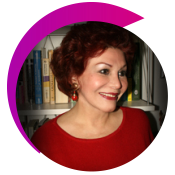
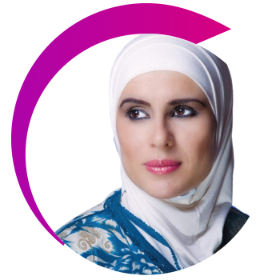
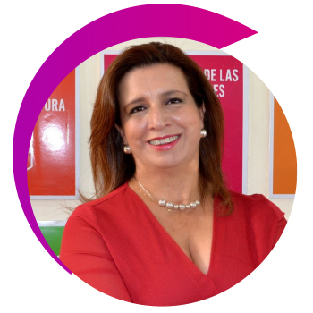
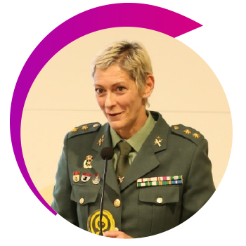

Edmundo Torrejón
Argentina
Ver Bio
Médico, Academia Boliviana de Cirugía, Colegio Internacional de Cirujanos. Médico del Papa Juan Pablo II en su arribo a Tarija – Bolivia.
Escritor, Presidente del PEN Tarija , Cónsul Poetas del Mundo, Embajador IFLAC PAVE PEACE International. Presidente ASOLAPO-Bolivia. Past Presidente de la Alianza Francesa, Past Presidente de la Sociedad Escritores de Bolivia, Secretario de Relaciones Internacionales de la Sociedad de Escritores de Bolivia, entre otras.
Escritor, Presidente del PEN Tarija , Cónsul Poetas del Mundo, Embajador IFLAC PAVE PEACE International. Presidente ASOLAPO-Bolivia. Past Presidente de la Alianza Francesa, Past Presidente de la Sociedad Escritores de Bolivia, Secretario de Relaciones Internacionales de la Sociedad de Escritores de Bolivia, entre otras.
Amal Eqeiq
Ver Bio
Profesora asistente de estudios árabes y literatura comparada en Williams College.
Actualmente está trabajando en su manuscrito, Afinidades indígenas: estudio comparativo en narrativas mayas y palestinas.
Su investigación interdisciplinaria incluye literatura árabe moderna, cultura popular, estudios palestinos, feminismo(s), estudios de performance, traducción, estudios indígenas en las Américas, el Sur Global, historia literaria, hip-‐hop, estudios fronterizos críticos y decolonialidad.
Actualmente está trabajando en su manuscrito, Afinidades indígenas: estudio comparativo en narrativas mayas y palestinas.
Su investigación interdisciplinaria incluye literatura árabe moderna, cultura popular, estudios palestinos, feminismo(s), estudios de performance, traducción, estudios indígenas en las Américas, el Sur Global, historia literaria, hip-‐hop, estudios fronterizos críticos y decolonialidad.

Amanda Soares
Ver Bio
Graduada en Letras UFBA, Investigadora en el área de Literatura y cultura, escritora e influencer digital en la página @arteamare.
Fundadora de PCDSA (Proyecto social que visibiliza la identidad de PCD y sus pluralidades), autora del libro “Todos los girasoles que encontré en tu cuerpo” - Editora Amazon (Lanzamiento 2021).
Fundadora de PCDSA (Proyecto social que visibiliza la identidad de PCD y sus pluralidades), autora del libro “Todos los girasoles que encontré en tu cuerpo” - Editora Amazon (Lanzamiento 2021).

Andrea Marqués
Ver Bio
Graduada en Derecho por la Universidade Católica do Salvador (1997) y Especialización por la Faculdade Ruy Barbosa (2012).
Enseñó Derecho Administrativo Sanitario en la Faculdade São Camilo de Salvador-BA, en el curso de Postgrado en Vigilancia Sanitaria (2014).
Enseñó Derecho Administrativo Sanitario en la Faculdade São Camilo de Salvador-BA, en el curso de Postgrado en Vigilancia Sanitaria (2014).
Andrés Isch
Ecuador
Ver Bio
Abogado por la Universidad Internacional del Ecuador, tiene una Maestría en Políticas Públicas por la Universidad del Desarrollo de Chile. Realizó el Programa de Gobernanza y Liderazgo Político de la Escuela de Gobierno IDE – Universidad de Los Hemisferios, y el Executive Program in Leadership Decision Making de Harvard Kennedy School.

Bibiana Aido Almagro
España
Ver Bio
Representante de ONU Mujeres en la Oficina de Ecuador. Cuenta con una amplia experiencia en la organización, a la que se vinculó en 2011.

Carmen Aido Lazo
Ver Bio
Trabajó como Agente de Programa y Coordinador Diputado del Informe de Desarrollo Humano en el Programa de las Naciones Unidas para el Desarrollo. También trabajó en el Ministerio de Economía como un asesora en asuntos de energía, comercio internacional, zonas libres, estadística y negociaciones con sectores diferentes.
Consuelo Cruz
España
Ver Bio
Política española de origen colombiano que manifiesta ser orgullosamente afrocolombiana. Conferencista internacional, y reconocida activista en contra de la violencia de género, la lucha por los derechos humanos y de las comunidades africanas y afrodescendientes.
Es la primera persona africana, afrodescendiente, negra en ser propuesta en 40 años de democracia en España, como candidata al Congreso de los Diputados por el Partido Socialista Obrero Español (PSOE).
Es la primera persona africana, afrodescendiente, negra en ser propuesta en 40 años de democracia en España, como candidata al Congreso de los Diputados por el Partido Socialista Obrero Español (PSOE).

Cumanda Guevara Aguilar
Ver Bio
Mujer emprendedora, Cabeza de familia, Doctora en Naturopatía que a través de sus conocimientos en medicina natural ha luchado por impulsar la medicina ancestral de sus pueblos indígenas para fomentar el desarrollo y el empoderamiento de los sectores más necesitados, ecologista amante de la Naturaleza.
Dino Raul Jimenez
Perú
Ver Bio
Consultor en planes de Desarrollo y proyectos de cooperación Internacional. Becario del departamento de Estado de los Estados Unidos. Magister en Economía con mención en Formulación y Evaluación de proyectos de Inversión Pública. Estudios en The George Washington University.

Miriam Estrada Castillo
Ver Bio
Doctora en Jurisprudencia y Ciencias Sociales y Políticas (con Honores), Máster en Derechos Humanos con mención en Migración y Extranjería por la Universidad Nacional de España (UNED), Abogada especializada en Derecho Internacional, Derecho Penal Internacional, Derechos Humanos, Democracia, Seguridad, Desarme, Contraterrorismo y Contra radicalización.

Carol Hullin
Chile
Ver Bio
Especialista Principal en TIC de eSalud en el banco mundial en la Unidad de Tecnología de la Información y la Comunicación (TIC). Actualmente brinda apoyo cruzado principalmente al sector de la salud en cuatro regiones a nivel mundial, principalmente mediante el diseño y desarrollo de métodos correctos para usar las TIC en la salud utilizando estándares.

Eloisa Souza Arruda
Ver Bio
Fiscal y directora de la Escuela Superior del Ministerio Público (ESMP).

Estela González de Rojas
Ver Bio
Directora General de Posgrado de la Universidad Columbia del Paraguay, Premiada como Mujer Influyente del Año 2020 The Washington Academy - The Napolitan Victory Awards. Doctora en Management y Marketing por la Universidad Columbia del Paraguay y la Universidad de Huelva – España.
Máster en Administración de Empresas.
Máster en Administración de Empresas.

Helen Almond
Ver Bio
Enfermera registrada. Tiene una Maestría en Enfermería Clínica (Nurse Practitioner UK), Post Grad Cert. en Administración y Doctorado en Salud, Información y Computación.
Su investigación se centra en el uso de metodologías participativas para examinar el impacto de la salud digital en la prestación de atención centrada en el ser humano para personas con enfermedades crónicas complejas en comunidades rurales.
Su investigación se centra en el uso de metodologías participativas para examinar el impacto de la salud digital en la prestación de atención centrada en el ser humano para personas con enfermedades crónicas complejas en comunidades rurales.
Paola Onzaga
Colombia
Ver Bio
Abogada, Magister en Ciudadanía, Derechos Humanos, Política y Ética de la Universidad de Barcelona, España. Docente Universitaria, trabaja para un prestigioso despacho de abogados en la defensa de los derechos humanos de las mujeres

Laura Monica Navarro
Ver Bio
Directora del Centro de Información de las Naciones Unidas para Colombia, Ecuador y Venezuela.
Directora de Promoción y Comunicaciones Globales de la agencia especializada de la ONU y la institución financiera internacional, el FIDA, el Fondo Internacional para el Desarrollo Agrícola.
Directora de Promoción y Comunicaciones Globales de la agencia especializada de la ONU y la institución financiera internacional, el FIDA, el Fondo Internacional para el Desarrollo Agrícola.

Edgardo Palacios
Ver Bio
Embajador de Cultura Ciudad de San Lorenzo; Embajador de Paz; Embajador Mujeres Sin Límites,
Guayaquil Ecuador.
Diplomado: Defensor DDHH mat:024, Investigador internacional de los DDHH, Promotor de Paz, escritor, periodista y poeta.
Diplomado: Defensor DDHH mat:024, Investigador internacional de los DDHH, Promotor de Paz, escritor, periodista y poeta.

Flavia Dos Santos
Brasil
Ver Bio
Bacharel Psicologia. Sexóloga. Terapeuta sexual en clínica médica privada- Manhattan Family Practice. Periódico-Columna. EEUU/Brazil.

Francis Bell
Portugal-Venezuela
Ver Bio
Dedicada al desarrollo y estudio del comportamiento humano con más de 20 años de experiencia profesional. Es Psicopedagoga, Licenciada en Artes, Psicólogo, Magíster en Estrategias de Aprendizaje, Magister en Estética de Arte, Doctora en Ciencias Gerenciales, Master Coach Trainer de la International Association of Coaching Institutes ICI, Terapeuta Cognitivo Conductual y Master Trainer en Programación Neurolingüística.
Gabriela Mansur
Ver Bio
Con más de 20 años de trabajo dedicados a la defensa de los derechos de las mujeres, es una de las voces más activas sobre este tema en Brasil. Creadora de varios proyectos y políticas públicas de empoderamiento femenino, igualdad, acceso a la justicia, prevención y lucha contra la violencia hacia la mujer, es presidenta del Instituto Justiça de Saia.
Gabriela Rodríguez
Ver Bio
Decana de Derecho – Universidad de Los Hemisferios.
Msc. En Matrimonio y Familia por la Universidad de Los Hemisferios y Mg. En Derecho Civil y Procesal Civil por la Universidad Técnica Particular de Loja. Abogada de la República por la Pontificia Universidad Católica del Ecuador.
Msc. En Matrimonio y Familia por la Universidad de Los Hemisferios y Mg. En Derecho Civil y Procesal Civil por la Universidad Técnica Particular de Loja. Abogada de la República por la Pontificia Universidad Católica del Ecuador.

Ghadeer Abusneineh
Palestina
Ver Bio
2013 Maestría, Universidad Nacional Autónoma de Nicaragua, literatura española y latinoamericana (con distinción).
My Feathered Brothers, (Mis hermanos emplumados) Instituto Árabe de Investigación y Publicaciones, 2017. Nadie nos mostró el camino, El libro de profesiones tristes, El canto de los morros.
My Feathered Brothers, (Mis hermanos emplumados) Instituto Árabe de Investigación y Publicaciones, 2017. Nadie nos mostró el camino, El libro de profesiones tristes, El canto de los morros.
Gloria Gallardo
Ecuador
Ver Bio
Política ecuatoriana. Fue directora de noticias de Ecuavisa en 1990.
Actualmente es la Directora de Turismo y Promoción Cívica de la Muy Ilustre Municipalidad de Guayaquil.
Actualmente es la Directora de Turismo y Promoción Cívica de la Muy Ilustre Municipalidad de Guayaquil.

Helene Papper
Francia
Ver Bio
Directora del Centro de Información de Naciones Unidas en Bogotá, el cual ejerce en Colombia, Ecuador y Venezuela. La Sra. Papper asume sus funciones el día de hoy.
Ivonne Baki
Ecuador
Ver Bio
Política y diplomática ecuatoriana. Entre los cargos más notorios que ha ocupado destacan el de Ministra de Comercio Exterior (de 2003 a 2005) y Presidenta del Parlamento Andino (de 2007 a 2009).
Janet Hinostroza
Ecuador
Ver Bio
Política y periodista ecuatoriana.
Estudió en la Universidad Internacional del Ecuador mientras trabajaba como reportera y presentadora para Teleamazonas. En 2010 asumió la conducción del programa matutino La mañana de 24 horas tras la salida del periodista Jorge Ortiz García por diferencias con el Presidente de Ecuador Rafael Correa.
Estudió en la Universidad Internacional del Ecuador mientras trabajaba como reportera y presentadora para Teleamazonas. En 2010 asumió la conducción del programa matutino La mañana de 24 horas tras la salida del periodista Jorge Ortiz García por diferencias con el Presidente de Ecuador Rafael Correa.
Julieta Palmeira
Ver Bio
Geriatra y miembro del movimiento de mujeres desde la década de 1970, cuando comenzó a participar en la Unión Brasileña de Mujeres - UBM. También estuvo presente en el movimiento de mujeres que solicitó la creación de la Secretaría de Estado de Políticas para la Mujer en Bahía, en 2011.En enero de 2017 asumió la dirección de la Secretaria del Estado de Políticas para la mujer en Bahía.
Karen Sanchez
Ver Bio
Administradora de empresas, MBA. Empresaria, emprendedora, conferencista y filántropa. Galardonada a nivel mundial por su trabajo y lucha hacia la equidad de género en más de 8 países. Fundadora de la organización SHE IS presente en 3 países que ha impactado la vida de más de 7600 mujeres y niñas
Ana Córdoba
Nicaragua-Paraguay
Ver Bio
Nacída en Nicaragua, Centroamérica pero adoptada por el corazón de América, Paraguay.
Graduada en Marketing y Publicidad, ademas de haber realizado un Masterado, entre otras importantes especializaciones relacionadas al Marketing.
Graduada en Marketing y Publicidad, ademas de haber realizado un Masterado, entre otras importantes especializaciones relacionadas al Marketing.
Lida Rosa Vera de Rojas
Ver Bio
Realizó sus estudios Universitarios en la Universidad Católica de Encarnación, en donde recibió el título de Abogada hace 32 años.
Liliana Negre de Alonso
Argentina
Ver Bio
Abogada y política argentina. En 1999 fue elegida Diputada Nacional por el Partido Justicialista de la provincia de San Luis.
Es docente universitaria, conferencista internacional y autora de varios artículos científicos de su área.
Es docente universitaria, conferencista internacional y autora de varios artículos científicos de su área.
María Amelia Viteri
Ver Bio
Abogada y Doctora en Jurisprudencia, con más de dos décadas de experiencia en asesoría y consultoría legal en el sector privado y sector público, fundadora y gerente de la firma HITOS CONSULTORES.
Se ha desempeñado como viceministra, asesora ministerial y subsecretaria de Estado, en áreas de política productiva y ha desempeñado cargos gerenciales en el sector financiero privado.
Se ha desempeñado como viceministra, asesora ministerial y subsecretaria de Estado, en áreas de política productiva y ha desempeñado cargos gerenciales en el sector financiero privado.

María Fernanda Garcés
Ver Bio
Nacída en Nicaragua, Centroamérica pero adoptada por el corazón de América, Paraguay.
Graduada en Marketing y Publicidad, ademas de haber realizado un Masterado, entre otras importantes especializaciones relacionadas al Marketing.
Graduada en Marketing y Publicidad, ademas de haber realizado un Masterado, entre otras importantes especializaciones relacionadas al Marketing.
María Medeiros
Brasil
Ver Bio
Magíster en Relaciones Internacionales de la Pontificia Universidad Javeriana de Bogotá, Colombia, y Administración de Empresas de la PUC-Rio.
Más de 10 años de experiencia en Relaciones Internacionales e Interinstitucionales. Posee sólidos conocimientos de Economía y Política Internacional, así como de las reglas y parámetros de cooperación de diferentes agencias de Naciones Unidas.
Más de 10 años de experiencia en Relaciones Internacionales e Interinstitucionales. Posee sólidos conocimientos de Economía y Política Internacional, así como de las reglas y parámetros de cooperación de diferentes agencias de Naciones Unidas.
Marycarmen Sobrino
Venezuela-España
Ver Bio
Influencer venezolana y Conferencista Motivacional.
Comunicadora social venezolana-española, especializada en Resolución de Conflictos y Negociación es locutora por más de 36 años; animadora; actriz, motivadora.
Comunicadora social venezolana-española, especializada en Resolución de Conflictos y Negociación es locutora por más de 36 años; animadora; actriz, motivadora.
Mayté Benítez
Ver Bio
Abogada y Doctora en Jurisprudencia por la Pontificia Universidad Católica del Ecuador, Especialista Superior en Derecho Financiero y Bursátil, Especialista en Tributación y, Magister en Derecho con mención en Derecho Tributario por la Universidad Anida Simón Bolívar.
Mel Garcia
Ver Bio
Consultora política y de imagen. Licenciada en Comunicación y Posgradudada en Consultoría Política.
Realiza estrategia de imagen y branding para el sector público y privado. Trabajó por 20 años en campañas para presidente.
Realiza estrategia de imagen y branding para el sector público y privado. Trabajó por 20 años en campañas para presidente.
Mirta Praino
Argentina
Ver Bio
Asesoramiento a Municipios, Asesora Legislativa, Honorable Cámara de Diputados de la Provincia de Buenos Aires, Experta en Gobiernos Locales Abiertos, Estudios de Género, Compiladora Libro 100 Mujeres Una Historia San Fernando y Misionera de la Paz.
Mónica Galán
Ver Bio
Formadora, conferenciante internacional y experta en comunicación verbal y no verbal de impacto. En 2018 publicó el exitoso libro "Método BRAVO.
Monica Kalile
Ver Bio
Gestora de negocios en turismo, Abogada criminalista, Especialista en Derecho Público y Control Municipal, Ex-Superintendente de Políticas para las Mujeres, Fundadora del Instituto A Mulherada (La Mujerada), Activista de los derechos de las mujeres.
Carolina del Ángel Cruz
Ver Bio
Consejera electoral y Presidenta de la Comisión Permanente de Igualdad de Género y Derechos Humanos del Instituto Electoral de la Ciudad de México.
Nilsy Rapalo
Ver Bio
Licenciada en Psicología por la Universidad del Norte (Barranquilla, Colombia). Ha realizado investigaciones sobre violencia doméstica.
Paola Rueda López
Ver Bio
Consultora y Speaker.
Presidenta honoraria Fundación Avon Colombia, Perú y Ecuador. Creadora de “Liderazgo Mujer” el entrenamiento para cerrar brecha de género y potenciar mujeres en cargos directivos en América Latina.
Presidenta honoraria Fundación Avon Colombia, Perú y Ecuador. Creadora de “Liderazgo Mujer” el entrenamiento para cerrar brecha de género y potenciar mujeres en cargos directivos en América Latina.
Pedro Pimentel
Ver Bio
Investigador universitario, consultor en la área de la Sociología, Derechos Humanos, Derechos del Niño. Diplomático. POSCOHR Portuguese Speaking Countries Observatory on Human Rights, Facultad de Medicina de la Universidad de Coimbra, NOVA Universidad de Lisboa, Portugal.
Liliana Carillo
Ver Bio
Con más de de 25 años de experiencia en el desarrollo de negocios ha recibido reconocimiento de diferentes medios locales por su trabajo educativo y de empoderamiento a los empresarios latinos en la Ciudad de New York.
Actualmente, Liliana impulsa a las marcas de las empresarias latinas a nivel global, dándoles todo el soporte para que puedan facturar sus primeros 100k+ con programas virtuales en vivo.
Actualmente, Liliana impulsa a las marcas de las empresarias latinas a nivel global, dándoles todo el soporte para que puedan facturar sus primeros 100k+ con programas virtuales en vivo.
María Alejandra Muñoz
Ecuador
Ver Bio
Cuenta con una Licenciatura en Ciencias Sociales y Políticas, título emitido por la
Universidad de Especialidades Espíritu Santo de Guayaquil, Ecuador, en el año 1998.
En el ámbito privado, ha ejercido en el área de la consultoría, de la investigación y de Dirección Ejecutiva de áreas de Asuntos Regulatorios, Compliance y Ética, con énfasis en aplicación de políticas de inclusión de la mujer en el ámbito público y privado.
En el ámbito privado, ha ejercido en el área de la consultoría, de la investigación y de Dirección Ejecutiva de áreas de Asuntos Regulatorios, Compliance y Ética, con énfasis en aplicación de políticas de inclusión de la mujer en el ámbito público y privado.
Ana Unhold
Argentina
Ver Bio
Bióloga. Docente. Escritora de ficción y temas sociales. 15 libros publicados. Artista plástica, con exposiciones en 10 países. Embajadora de Paz por varias instituciones.
Valeska Zanello
Ver Bio
Coordinadora del Programa de Graduación en Psicología Clínica y Cultura, Salud Mental y Género. Departamento de Psicologia Clínica. Instituto de Psicologia. Universidad de Brasília, Brasil
Rawaa Augé
Qatar
Ver Bio
Presentadora y productora de "voces de mujeres" o "bekasretta" en el canal árabe Al Jazeera desde 2019.También cubrió la AGNU y presentó varios eventos para Al Jazeera, y moderó diferentes paneles dentro de Qatar, incluida una entrevista a la ganadora del Premio Nobel Nadia Murad durante el foro de Doha 2018.
Rigoberta Menchú
Guatemala
Ver Bio
Es una líder indígena y activista guatemalteca, miembro del grupo maya quiché, defensora de los derechos humanos, embajadora de buena voluntad de la UNESCO y ganadora del Premio Nobel de la Paz (1992) y el Premio Príncipe de Asturias de Cooperación Internacional (1998).
Roselin Cabrales
Texas
Ver Bio
Consultora, Conferencista Internacional en Estrategias de Negocios y Negociación según el Método Harvard. Business Coach. Negociadora de Asuntos Individuales/Colectivos y Conflictos a nivel Internacional. Doctora en Ciencias Gerenciales, (Ph.D., en Ciencias Gerenciales).Doctora Honoris Causa (Ph.D.) ORAGEU. París Enero 2020.
Evelyn Vásquez
Puerto Rico
Ver Bio
Actualmente preside la Comisión de Asuntos del Consumidor y Servicios Públicos
Esenciales.
Es vicepresidenta de la Comisión de Turismo y Cultura y la Comisión de Desarrollo del Oeste. Vázquez es, además, secretaria de las comisiones de Gobierno y Revitalización Social.
Es vicepresidenta de la Comisión de Turismo y Cultura y la Comisión de Desarrollo del Oeste. Vázquez es, además, secretaria de las comisiones de Gobierno y Revitalización Social.

María Dolores Gimeno
Ver Bio
Entre los trabajos que realizó, está el acercar la Institución a la juventud, sobre todo a las jóvenes, ya que todavía son pocas mujeres y ellas tienen que ver que esta es una carrera maravillosa, en la que prestan un servicio a la ciudadanía de enorme valor y en la que el desarrollo profesional se puede ir construyendo según las expectativas y necesidades de cada momento.
María victoria Valencia
Miami
Ver Bio
Fundadora del Congreso Hispanoamericano de Negocios. El Congreso de los Estados Unidos de America declaró el dia 13 de Octubre del año 2016 como "El día del Congreso Hispanoamericano de Negocios” Doctor Honoris y causa por la contribución social y liderazgo en America Latina otorgado por Universidad Orageu. Doctor honoris causa en cultura de paz y responsabilidad social empresarial otorgado por UNIVERSIDAD PERUANA DE CIENCIAS E INFORMÁTICA, UNIVERSIDAD AQUINO DE BOLIVIA.